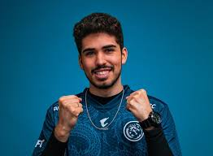
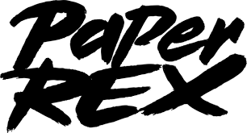

GIIIRA ASPAS
Após uma partida incrível, Aspas se consagra o melhor jogador de Valorant do planeta, matando 47 inimigos.

JOGADORES EM DESTAQUE
Conheça a equipe que está se destacando no cenário competitivo de Valorant.

A equipe da Paper Rex está se destacando com jogadas incríveis e uma sinergia impressionante entre os jogadores. Após tantos anos batendo na trave e sendo vice em diversos campeonatos, no ano de 2025, a equipe conquistou o Masters Toronto.
CONFIGURAÇÕES
Descubra as melhores configurações para otimizar seu desempenho em Valorant.
As configurações de vídeo, mouse e teclado são essenciais para garantir uma jogabilidade fluida e precisa. Ajuste a sensibilidade do mouse, a resolução do jogo e as teclas de atalho para se adequar ao seu estilo de jogo.